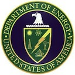
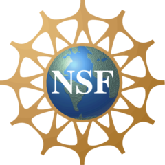

|  |
[DOE IAV] |
Energy/Water Nexus Knowledge Discovery Framework |
|  |
[NSF SaTC] |
An Investigation of the Propagation of Error-Resistant and Error-Prone Messages Over Large-Scale Information Networks |
|
[NSF SaTC] |
Data is Social: Exploiting Data Relationships to Detect Insider Attacks |
|
[NSF DIBBS] |
ARISTOTLE Cloud Federation: Data Analysis and Management Building Blocks for Multi-Campus Cyberinfrastructure through Cloud Federation |
 |
[Amazon] |
Amazon Web Services (AWS) in Education Research Grant |
 |
[Microsoft] |
Microsoft Azure for Research Grant |